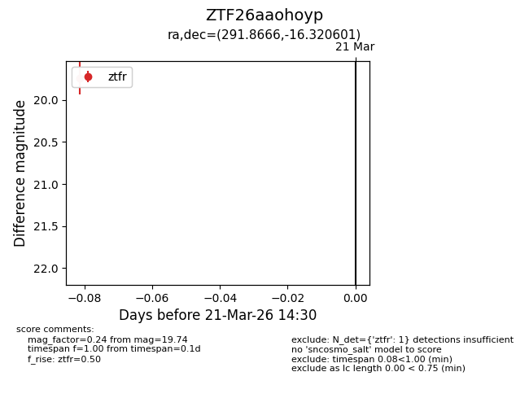
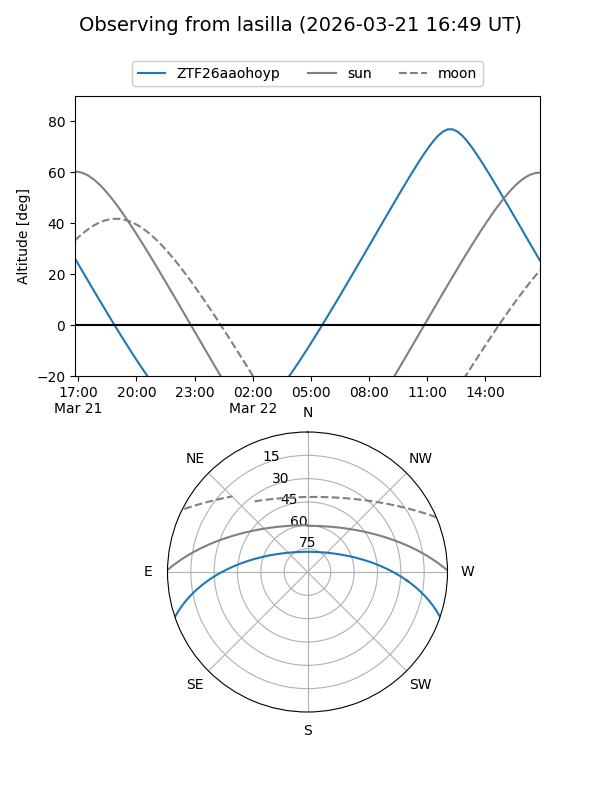
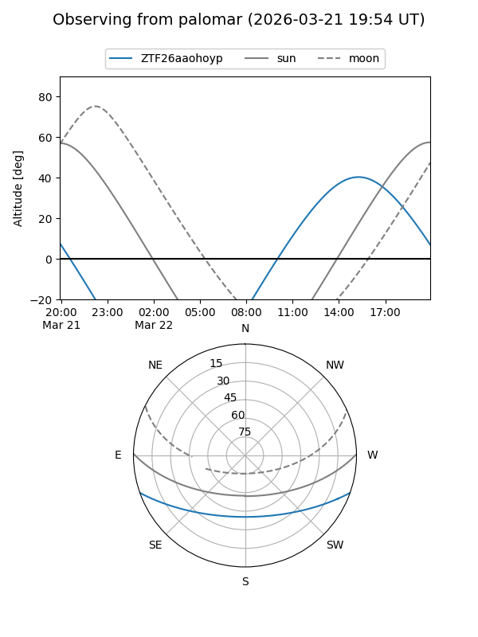
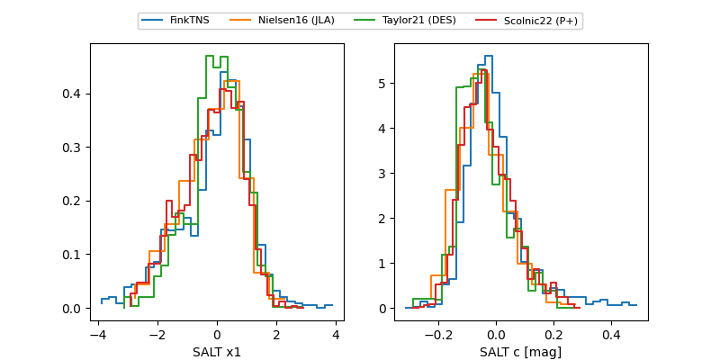

ZTF26aaohoyp
Target ZTF26aaohoyp at 2026-03-21 14:32
Aliases and brokers:
FINK: link
Lasair: link
ALeRCE: link
alt names
ZTF26aaohoyp (ztf,fink_ztf)
Coordinates:
equatorial (ra, dec) = 291.8666,-16.32060
equatorial (HMS+DMS) = 19:27:27.99,-16:19:14.16
galactic (l, b) = (22.0870,-15.18026)
Flags:
Photometry:
last ztfr=19.74
1 ztfr detections
Lightcurve

Visibility


Additional plots
